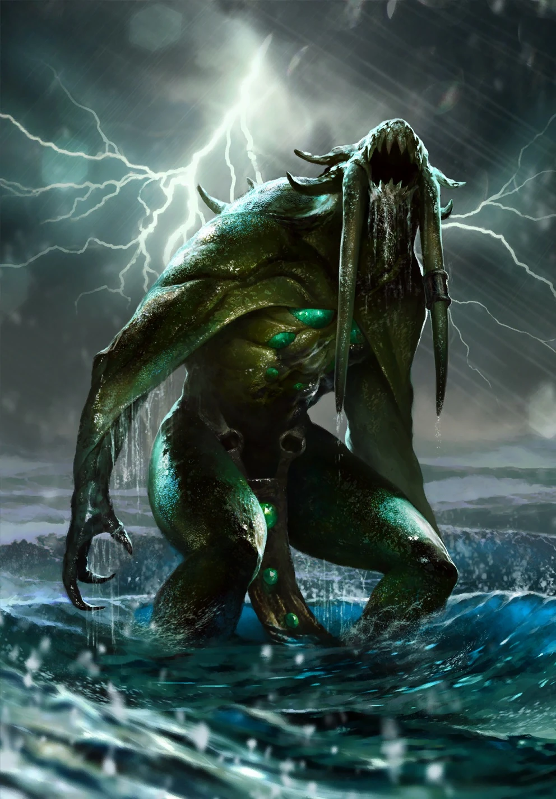
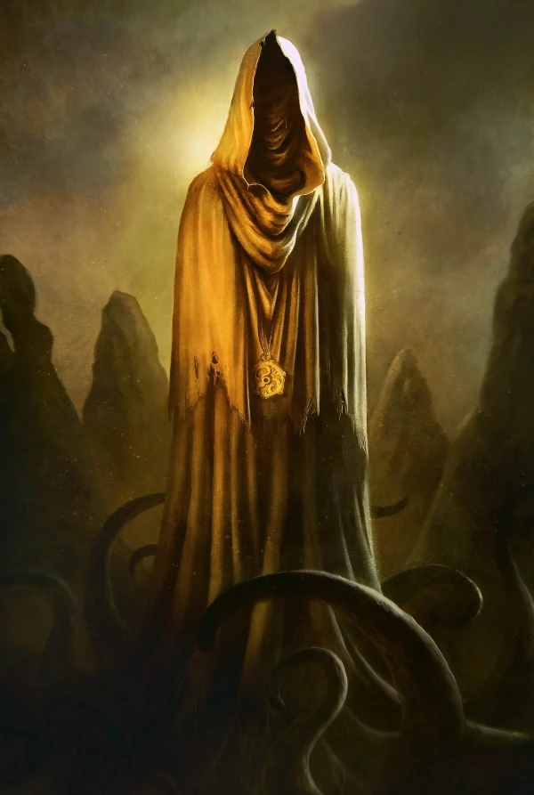
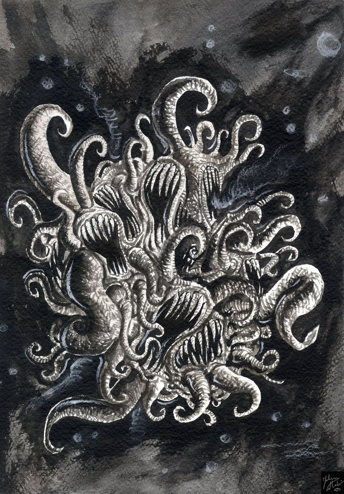
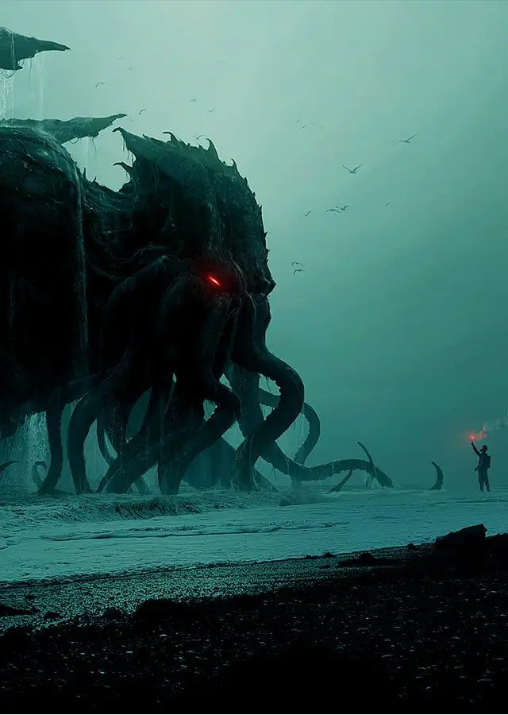

GRANDES ANTIGOS
"Howard Phillips Lovecraft, popularmente conhecido apenas como H.P. Lovecraft, não foi
considerado um grande autor ao longo de sua vida, e nunca foi capaz de se sustentar através
de suas obras. Apenas anos após sua morte o autor veio a ser considerado um nome muito
importante quando se trata de ficção sobrenatural e terror"
"Ainda assim, a obra de Lovecraft influencia diversas outras mídias atualmente, e os
monstros
criados pelo autor já inspiraram criaturas de séries, filmes, jogos e muito mais. O trabalho
do autor chegou até a originar um subgênero da ficção de terror conhecido como terror
lovecraftiano, também chamado de terror cósmico, que apresenta a ideia de que a realidade
por trás da aparente normalidade do universo é tão estranha aos humanos que somos incapazes
de compreendê-la, e apenas vê-la teria consequências catastróficas."

NYARLATHOTEP
Enquanto a maior parte dos Deuses Exteriores está exilada entre as estrelas, e os Grandes
Antigos dormem, Nyarlathotep é diferente, sendo muito ativo e por vezes vagando sobre a Terra
disfarçado como um humano.
Além disso, ele tem propósitos mais claros e serve aos outros Deuses Exteriores, agindo nos
cultos dedicados a eles ao invés de ser servido por um culto próprio. Ao contrário daqueles que
semeiam morte e destruição, Nyarlathotep dá maior importância a espalhar a loucura, algo que faz
com prazer.
Apresentado por Lovecraft na obra que leva seu nome, a criatura possui diversos nomes e
avatares, e é capaz de mudar de forma e de manipular mentes, poderes que utiliza para atrair
pessoas aos seus horrores, influenciando-as até a insanidade.

DAGON
Aparecendo pela primeira vez em um conto de Lovecraft que leva seu nome, Dagon é um dos
Profundos, criaturas inteligentes que habitam o oceano. Esses seres teriam formas
aproximadamente humanas, mas com uma aparência semelhante à dos peixes.
Apesar de ser considerado uma divindade, Dagon não é um dos Grandes Antigos como Cthulhu, ainda
que seja um ser muito antigo e assustadoramente grande.
Nos contos, Dagon é a criatura mais física e menos abstrata entre as criadas por Lovecraft. Sua
descrição enfatiza sua cabeça horrenda e corpo coberto de escamas.

HASTUR
Como dito anteriormente, Hastur foi gerado por Yog-Sothoth e é meio-irmão de Cthulhu. A criatura
se manifesta através de avatares: um deles é descrito como uma figura monstruosa e murcha, capaz
de voar e cheia de tentáculos que acabam em garras, feitos para perfurar crânios; outro dos
avatares de Hastur é o chamado Rei de Amarelo, figura associada à decadência e a doença.
Ao contrário de Cthulhu, Hastur não era originalmente uma criação de Lovecraft, e sim de Ambrose
Bierce, depois muito explorado por Robert W. Chambers. Era comum no círculo de Lovecraft que
histórias fossem criadas no mesmo universo, sendo os próprios Mitos de Cthulhu estabelecidos
dessa forma.
Nos contos de Lovecraft, Hastur é mencionado em Sussurros na Escuridão.

AZATHOTH
A misteriosa entidade amorfa chamada Azathoth reina sobre o tempo e o espaço, de acordo com o
que Lovecraft escreveu sobre as descrições contidas no Necronomicon.
Composta de trevas e confusão em efervescência, Azathoth é uma entidade que reside no centro do
caos do universo, consumindo a criação incessantemente. A entidade também é composta por sons,
descritos como a batida vil de tambores e o fino som choroso de flautas amaldiçoadas.
A falta de definição decorre do fato de que cada um vê Azathoth de maneira diferente, além de a
entidade estar em constante mutação. As evidências de sua existência, de acordo com a obra de
Lovecraft, estariam ao redor de um buraco negro no centro da Via Láctea.
